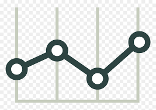

Welcome back, Otaku!
Track your anime journey and connect with fellow fans.
Total Watched
247
Series & Movies
Hours Watched
8,420
Time well spent
Average Rating
8.6
Your taste score
Current Streak
12 days
Keep it up!
Continue Watching
View All →My List
Manage your collection
Discover
Find new shows
Clubs
Join discussions

Track Progress
Log episodes